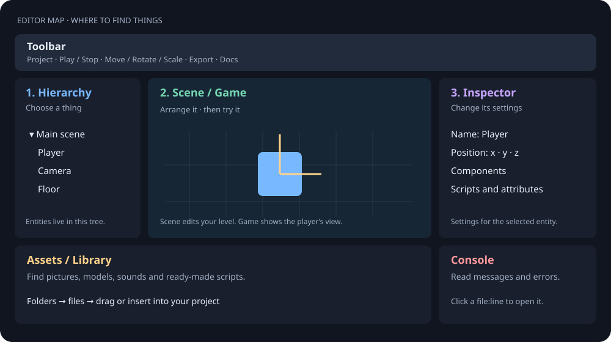

Editor tour
The editor lets you choose an object, change its settings and try the result. Start with Hierarchy, Inspector and the Play button; learn the other panels when you need them.
The editor runs as a desktop app. Its layout puts the scene in the middle, the entity list on the left and the selected entity’s settings on the right.

Appearance and project hub#
The default PlayCanvas theme uses blue-grey panels, thin dividers, 2 px corners and an orange accent; panel titles are upper-case and asset types have coloured icons. Settings that still had the previous default (Graphite) migrate once; any theme you chose yourself stays. All other themes, including Graphite, are in Settings. See Unity-style workflow for the layouts, menus and tools. The blue Play-mode tint and your chosen PLAYMODE-COLOR are preserved.
The hub provides New project, Recent projects and searchable Examples/Tutorials in separately scrolling cards. Expand Starter templates for a ready-made project; the templates are included in the app bundle. Hover a recent-project row to see its full path. Docs opens the guides even before opening a project; Back to projects returns to the hub.
Toolbar Play toggles Stop, Export… opens the export dialog, and the search icon opens the command palette. Settings scrolls in smaller windows. Drag dock tabs to rearrange panels; closed tabs reopen from Window.
Panels#
- Hierarchy — the entity tree (Add entity button; right-click: Add child, Duplicate, Delete, Copy, Paste). Drag a row onto another to reparent (top 30 % of a row inserts before), drop on empty space to move to the root. Dropping an asset on empty space creates an entity from it.
- Viewport — Scene tab is the edit view (2D Canvas / 3D Babylon): pan, orbit, zoom, pick, and move/rotate/scale gizmos with snapping. Game tab runs the real game.
- Inspector — generated from component schemas and script
static attributes. Add components with + Add component and scripts with + Add script; change values live. - Assets — folder tree plus thumbnail grid (images, spritesheets, audio waveforms, rendered models). Import by dropping files from the OS.
- Library — search ready-made scripts, prefabs and kits; Insert adds them to the project/selection.
- Console —
console.*output of the running game and build output. Clickfile.js:12to open that line. - Code — a native code editor with tabs, highlighting (10 languages), find/replace (regex), project search, autocomplete (nord.js API + library + file words), error squiggles, minimap, split view and multi-cursor.
- Docs — this manual.
Play, stop, reload#
▶ Play (Cmd+R) runs the game in the Game tab with live reload: saving a script hot-reloads it without restarting the scene
(see Scripting). ■ Stop is Cmd+.. For Rust projects Play builds first and streams cargo output to the Console.
Undo and project safety#
Every scene change is an undoable command (Cmd+Z / Shift+Cmd+Z). The editor autosaves with crash recovery; Cmd+S saves explicitly.
Shortcuts#
See the shortcut table (also in Settings, Cmd+,). Highlights: Cmd+P quick open, Cmd+K command palette, Q/W/E/R/T tools, F focus, Cmd+D duplicate. Every editor shortcut can be changed in Settings ▸ Shortcuts: click the key box, press the new keys (Esc cancels, the ↺ button restores the default). The 3D Scene view also has an axis gizmo in its top-right corner (click an axis to look along it), and a marquee selects several objects. See Unity-style workflow for the full list.
Themes and skins#
Settings → Skin (fonts) and Theme (colours). The same skins/themes exist for in-game UI (project.ui.skin/ui.theme, see UI).
Current example content#
Settings → USE CACHED CONTENT is OFF by default. Examples and Tutorials open the current files from your checkout or rebuilt app bundle. Old Recent entries for saved example copies also resolve to the current bundled example. Save edits to a separate project if you want your own version: editing an example with this setting OFF changes its current source files.
Turn the setting ON to test saved example content: the editor creates/reuses a private copy under ~/.config/nord/examples/. Rebuilding the app leaves those copies as they were. Reopen the example after changing this setting to switch its source.
OFF also uses temporary embedded-browser storage and reads script attributes fresh. ON permits persistent embedded-browser storage. Changing the mode recreates webviews; game saves in temporary browser storage last only for that view. The dev server always reads requested files from disk and sends Cache-Control: no-store.
Where the editor saves files#
The editor's settings folder contains saved example/tutorial copies as well as your preferences. Rebuilding or replacing the app does not remove this folder. NORD_CONFIG_DIR, when set before launching the editor, overrides the entire folder on every platform.
| Platform | Settings folder without NORD_CONFIG_DIR |
Saved example/tutorial copies |
|---|---|---|
| macOS | $HOME/.config/nord/, normally /Users/<user>/.config/nord/ |
/Users/<user>/.config/nord/examples/<example-name>/ |
| Linux | $HOME/.config/nord/, normally /home/<user>/.config/nord/ |
/home/<user>/.config/nord/examples/<example-name>/ |
| Windows | %APPDATA%\NordEngine\ |
%APPDATA%\NordEngine\examples\<example-name>\ |
Windows uses %APPDATA%\NordEngine by default, including when launched by double-click. NORD_CONFIG_DIR overrides it. If %APPDATA% is absent, the older $HOME/.config/nord fallback applies. macOS and Linux keep $HOME/.config/nord (or .config/nord under the launch directory if HOME is unset); macOS ~/Library/Application Support and Linux $XDG_CONFIG_HOME are not selected automatically. Existing Windows settings under the older HOME/working-directory location can be copied into %APPDATA%\NordEngine.
Inside the settings folder:
| File or folder | Contents |
|---|---|
examples/<example-name>/ |
Complete saved project copies, including sprites, textures and scripts. Created/reused when USE CACHED CONTENT is ON; old copies can remain from earlier editor versions. |
editor.json |
Editor settings, including use_cached_content. |
layout.json |
Panel layout. |
recent.json |
Recent project paths. |
On macOS, open Finder → Go → Go to Folder… (Cmd+Shift+G) and enter ~/.config/nord/. On Linux, enter ~/.config/nord/ in your file manager; Ctrl+H usually shows hidden folders. On Windows, paste the resolved path into File Explorer's address bar.
Every opened project can also contain these folders, on all three platforms:
| Project-relative path | Contents |
|---|---|
.nord-cache/thumbs/ |
Generated asset thumbnails, keyed by source hash. These are previews, not copies used to run the game. |
.nord-cache/autosave/ |
Scene autosaves for crash recovery. |
.nord-cache/lock |
Running editor's project lock; normally removed when the project closes. |
With USE CACHED CONTENT OFF, existing saved example copies are bypassed; you do not need to delete them to see current art. To remove a saved copy, close that project and back up any edits before removing its examples/<example-name>/ folder. Removing editor.json, layout.json or recent.json resets the corresponding preferences/history; removing autosaves loses crash-recovery data.
Code wrapping and spacing#
The Code toolbar has a Word wrap toggle. It wraps the view without inserting newlines into your file. Settings exposes code font size, word wrap, line height (default 1.6 × font size), letter spacing (default 0 points), and tab width. These preferences are saved with the editor settings. Wrapped lines keep their original line number; the gutter and error markers follow their displayed positions.
Manual code previews have their own Wrap: on/off button and 1.6 line height. That preference belongs to this browser/manual, separately from the native editor settings.
FPS Level tab (FPS Creator addon)#
Projects that use the FPS Creator addon get an extra FPS Level tab: a grid level editor with a live 3D preview and one-click play-test. See the full illustrated FPS Creator guide, first-level tutorial and quick reference. Test/From here use unsaved level edits; main Play reads the saved project. Settings exposes all three FPS test bindings and a shortcut-only reset.
Find 2D, 3D and physics projects#
The welcome screen filters both starter templates and samples with Featured, All, 2D, 3D, FPS, Physics, Apps, and Rust. Featured shows a short curated set; searching also reaches older examples. Choose the 2D Platform Workshop, 2D Top-down Workshop or Machine Workshop template to begin in the 2D Level Creator.
Everyday shortcuts (new)#
- Hierarchy ▸ ＋ Create adds ready-made entities (Empty, Camera, Light, Text, UI Label/Button/Panel, Audio source, Spawner, Trigger zone, Graph, and in 3D Cube, Sphere, Ground, Directional light). Right-click ▸ Create child, Create empty parent (also Group selected), Rename (F2), Duplicate (Cmd/Ctrl+D), Delete (Del).
- Assets: right-click folders, files and the empty area for Open, Open with default app, Rename (F2), Duplicate, Delete, Reveal in Finder, Copy path and New folder / UI scene / script / graph.
- Window ▸ Layout switches between ready-made panel arrangements: Default, 2D game, 3D game, Coding, Visual scripting + UI.
- While the game runs the toolbar shows Pause and Step (advance one frame), next to Stop and Reload.
- Unity layouts: Window ▸ Layout ▸ Unity 2 by 3 / Wide / Tall put Scene and Game side by side with Hierarchy, Inspector and Project/Console around them.
- Run like Unity: F5 = Play / Stop the whole project, F6 = Run this scene (the scene open in the editor, ignoring the project's start scene; also the Scene toolbar button, Project menu and Cmd+K palette). Cmd+R still works. Needs Upgrade runtime in projects copied before this feature (the game page reads
?scene=). - Console ▸ Collapse (on by default) shows identical lines once with a count,
(12) coin collected, like Unity. Switch it off to see every line in order. Clear on Play (on by default) empties the console at every Play. - Cmd+Shift+P pauses/resumes the running game, Cmd+Alt+P steps one frame (as in Unity).
- Remote scene tree: while the game runs, Hierarchy and Inspector show the live entities of the running game (blue "LIVE" header). Click an entity to see its transform, components and script attributes; edit a value and it changes in the running game at once. Right-click for Activate/Deactivate, Duplicate, Destroy. Live edits are never saved; stop the game and they are gone. (Desktop editor only; not in the web editor.)
- F1 while the pointer is over a component header (or script) in the Inspector opens that component's manual page in your browser; each component also has a Docs (F1) button.
- Double-click a
.ui.jsonin Assets to open it in the UI Designer, a.graph.jsonin the Graph editor.